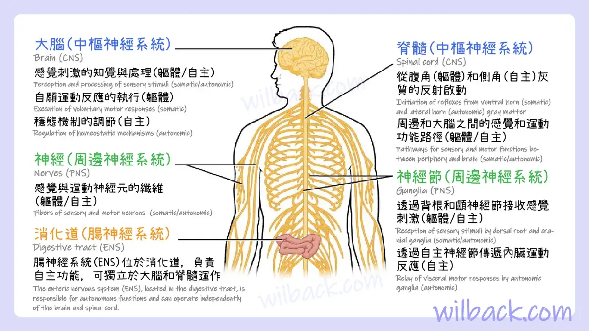

進階 CSS 技術
現在我們要學習現代 CSS 的強大功能：Flexbox 和 Grid 佈局系統、動畫效果、以及進階的響應式設計技巧。 這些技術讓我們能夠建立複雜的醫學圖表佈局和專業的互動式介面。
🎯 學習目標
- 掌握 Flexbox 佈局系統
- 學會 CSS Grid 網格佈局
- 建立流暢的動畫效果
- 設計複雜的響應式介面
- 建立專業的醫學圖表佈局
Flexbox 佈局系統
什麼是 Flexbox？
Flexbox 是一維佈局系統，特別適合處理元素在一個方向上的排列和對齊。它讓複雜的佈局變得簡單直觀。
基本 Flexbox 範例：
心臟系統
肺部系統
肝臟系統
腎臟系統
Flexbox 基本語法
.flex-container {
display: flex;
justify-content: space-between; /* 主軸對齊 */
align-items: center; /* 交叉軸對齊 */
gap: 1rem; /* 元素間距 */
}
.flex-item {
flex: 1; /* 彈性增長 */
padding: 1rem;
background: #f0f0f0;
border-radius: 8px;
}常用 Flexbox 屬性：
justify-content
控制主軸上的對齊方式
start
center
end
space-between
align-items
控制交叉軸上的對齊方式
stretch
center
flex-start
flex-end
flex-direction
控制彈性項目的排列方向
row
column
row-reverse
進階 Flexbox 範例：
justify-content 詳細示範
1
2
3
flex-start (預設)
1
2
3
center
1
2
3
flex-end
1
2
3
space-between
1
2
3
space-around
1
2
3
space-evenly
align-items 詳細示範
1
2
3
stretch (預設)
1
2
3
center
1
2
3
flex-start
1
2
3
flex-end
flex-wrap 換行示範
心臟系統
肺部系統
肝臟系統
腎臟系統
神經系統
nowrap (預設) - 不換行
心臟系統
肺部系統
肝臟系統
腎臟系統
神經系統
wrap - 允許換行
心臟系統
肺部系統
肝臟系統
腎臟系統
神經系統
wrap-reverse - 反向換行
flex 屬性示範
flex: 1
flex: 2
flex: 1
flex 比例分配
flex-grow: 1
flex-shrink: 0
flex-basis: 200px
flex-grow, flex-shrink, flex-basis
align-self 個別對齊示範
預設
align-self: flex-start
預設
align-self: center
預設
align-self: flex-end
個別元素對齊
實際應用範例 - 醫學卡片佈局
人體系統總覽
心臟系統
循環系統核心
肺部系統
氣體交換
肝臟系統
代謝解毒
CSS Grid 網格佈局
什麼是 CSS Grid？
CSS Grid 是二維佈局系統，可以同時控制行和列，非常適合建立複雜的網格佈局，如醫學圖表展示。
基本 Grid 範例：
人體系統總覽
主要內容
CSS Grid 基本語法
.grid-container {
display: grid;
grid-template-columns: 200px 1fr 200px; /* 定義列 */
grid-template-rows: auto 1fr auto; /* 定義行 */
gap: 1rem; /* 網格間距 */
height: 400px;
}
.header {
grid-column: 1 / -1; /* 跨越所有列 */
}
.sidebar {
grid-row: 2 / 4; /* 跨越多行 */
}醫學圖表 Grid 佈局：

心臟系統

肺部系統

肝臟系統

腎臟系統

神經系統

內分泌系統
CSS 動畫效果
動畫基礎概念
CSS 動畫讓我們的醫學介面更加生動和互動，可以吸引使用者注意力並提升使用體驗。
動畫效果示範：
心跳動畫
模擬心跳的脈衝效果
彈跳動畫
吸引注意力的彈跳效果
旋轉動畫
持續旋轉的載入效果
CSS 動畫語法
/* 關鍵幀動畫 */
@keyframes pulse {
0% { transform: scale(1); }
50% { transform: scale(1.05); }
100% { transform: scale(1); }
}
.animated-card {
animation: pulse 2s infinite;
transition: all 0.3s ease;
}
.animated-card:hover {
transform: translateY(-5px);
box-shadow: 0 10px 20px rgba(0,0,0,0.2);
}過渡效果示範：
顏色過渡
hover 時顏色平滑變化
尺寸過渡
hover 時尺寸平滑變化
位置過渡
hover 時位置平滑移動
進階響應式設計
響應式設計策略
現代網頁必須在各種裝置上都能完美顯示，響應式設計確保我們的醫學內容在任何螢幕尺寸下都清晰易讀。
響應式網格示範：
桌面版：4欄
平板版：2欄
手機版：1欄
自動適應
響應式設計語法
/* 響應式網格 */
.responsive-grid {
display: grid;
grid-template-columns: repeat(auto-fit, minmax(250px, 1fr));
gap: 1rem;
}
/* 媒體查詢 */
@media (max-width: 768px) {
.medical-grid {
grid-template-columns: 1fr;
}
.flex-container {
flex-direction: column;
}
}
@media (max-width: 480px) {
.content-card {
padding: 1rem;
}
}斷點設計：
桌面版 (1200px+)
多欄位佈局，豐富的視覺效果
平板版 (768px-1199px)
適中的佈局，保持功能完整
手機版 (767px以下)
單欄位佈局，優化觸控體驗
進階 CSS 技巧
CSS 變數和自定義屬性
CSS 變數讓我們能夠建立一致的設計系統，特別適合醫學主題的配色方案。
CSS 變數示範：
心臟系統主題
使用 CSS 變數統一配色
肺部系統主題
動態切換主題色彩
肝臟系統主題
保持設計一致性
CSS 變數語法
:root {
--heart-color: #ff6b6b;
--lung-color: #4ecdc4;
--liver-color: #45b7d1;
--primary-font: 'Noto Sans TC', sans-serif;
--border-radius: 8px;
--shadow: 0 2px 4px rgba(0,0,0,0.1);
}
.heart-theme {
--primary-color: var(--heart-color);
background: var(--primary-color);
color: white;
border-radius: var(--border-radius);
box-shadow: var(--shadow);
}進階功能示範：
背景模糊效果
backdrop-filter: blur(10px)
漸層背景
linear-gradient 多色漸層
3D 變換
transform: perspective()
實作練習
🎯 建立複雜的醫學圖表佈局
現在讓我們用學到的進階 CSS 技巧來建立一個專業的醫學圖表展示頁面：
練習任務：
- 使用 CSS Grid 建立複雜的網格佈局
- 應用 Flexbox 處理元素對齊
- 添加流暢的動畫效果
- 實現完整的響應式設計
- 使用 CSS 變數建立主題系統
完整進階 CSS 範例
/* 醫學圖表佈局 */
.medical-dashboard {
display: grid;
grid-template-areas:
"header header header"
"sidebar main charts"
"footer footer footer";
grid-template-columns: 250px 1fr 300px;
grid-template-rows: auto 1fr auto;
gap: 1rem;
min-height: 100vh;
}
.medical-chart {
display: flex;
flex-direction: column;
align-items: center;
justify-content: center;
background: var(--surface-color);
border-radius: var(--border-radius);
box-shadow: var(--shadow);
transition: all 0.3s ease;
animation: fadeInUp 0.6s ease-out;
}
.medical-chart:hover {
transform: translateY(-5px) scale(1.02);
box-shadow: var(--shadow-lg);
}
@keyframes fadeInUp {
from {
opacity: 0;
transform: translateY(30px);
}
to {
opacity: 1;
transform: translateY(0);
}
}章節總結
✅ 已學習內容
- Flexbox 一維佈局系統
- CSS Grid 二維網格佈局
- CSS 動畫和過渡效果
- 進階響應式設計技巧
- CSS 變數和自定義屬性
- 現代 CSS 進階功能
🎯 下一步
在下一章中，我們將學習 JavaScript 基礎，實現真正的互動功能，包括 DOM 操作、事件處理和動態內容載入。